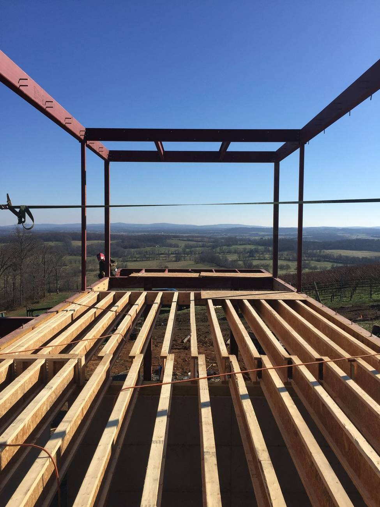
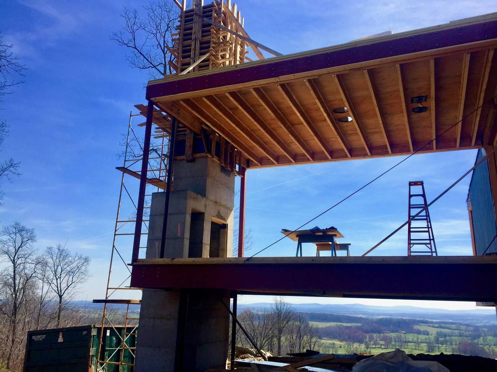
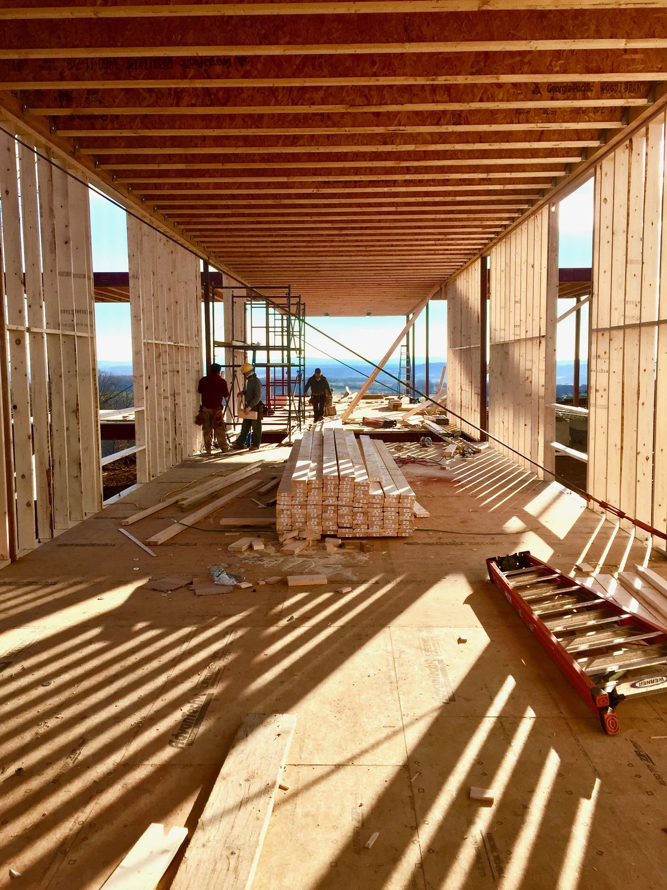
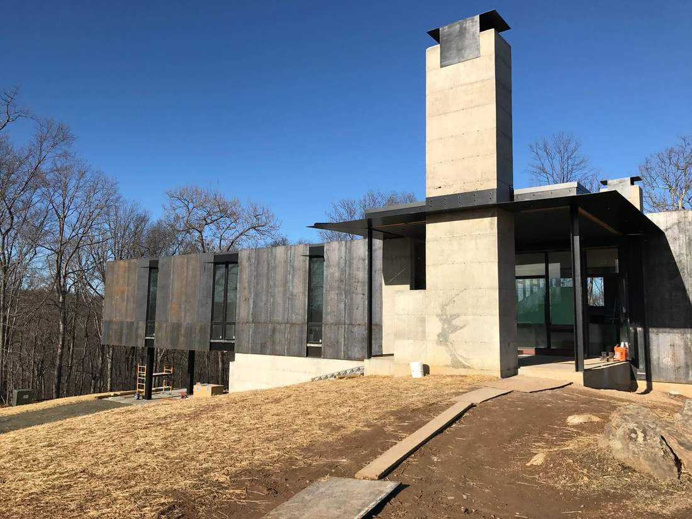
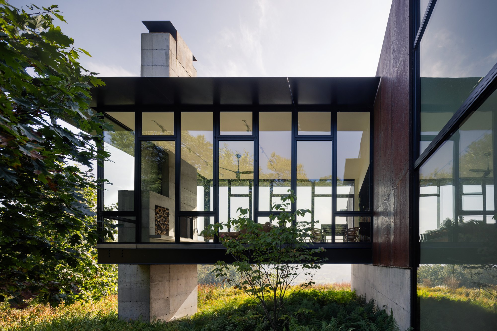
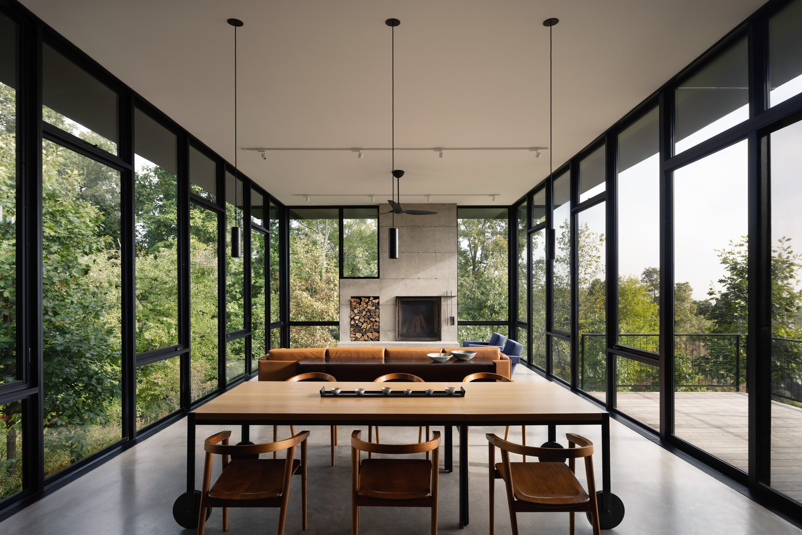
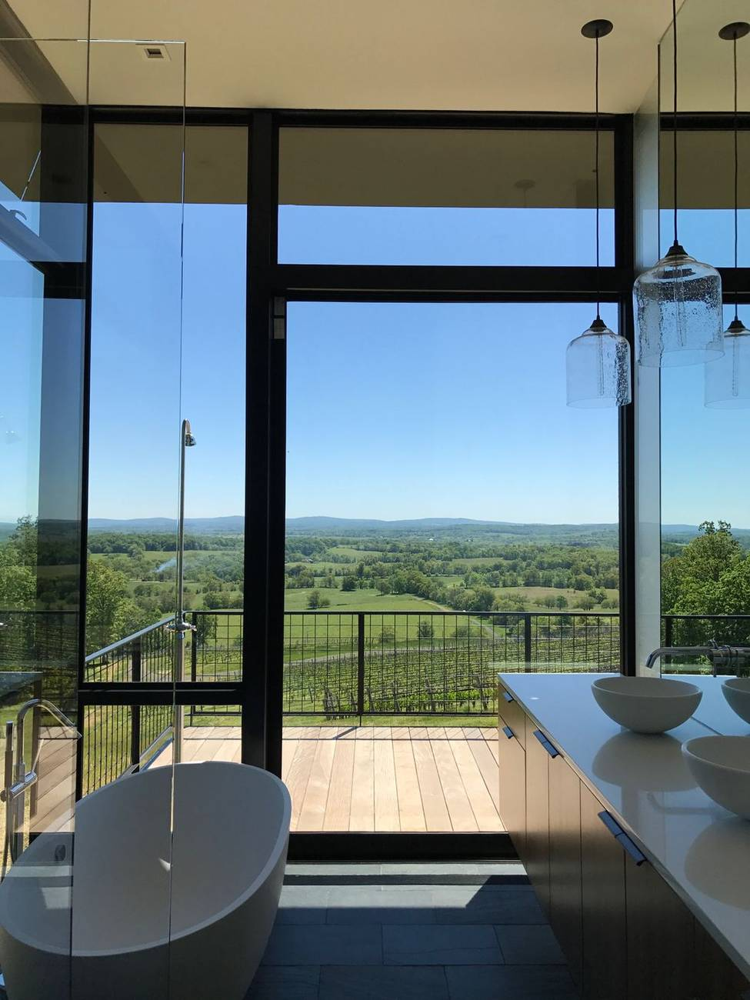
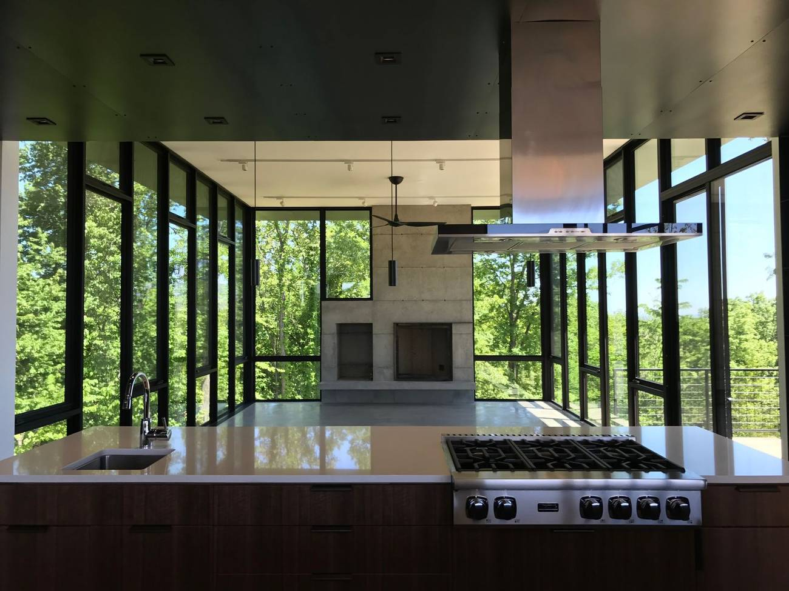
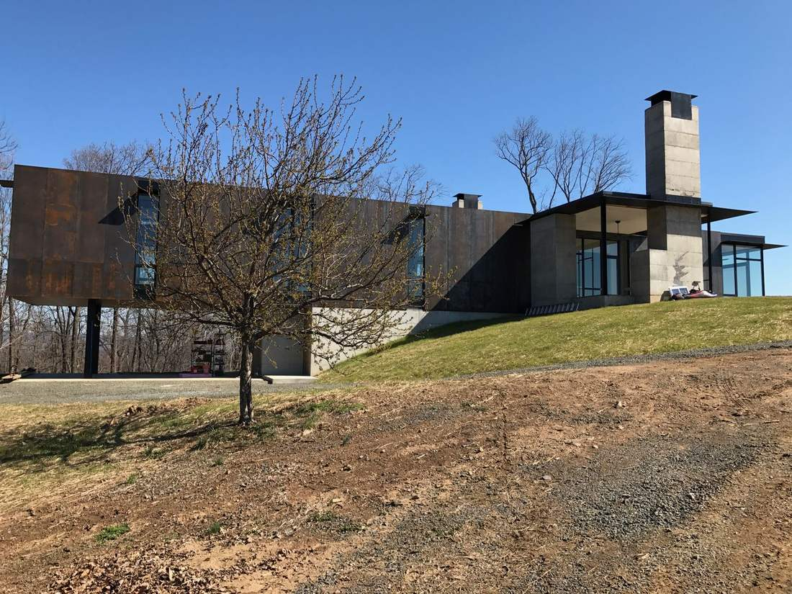
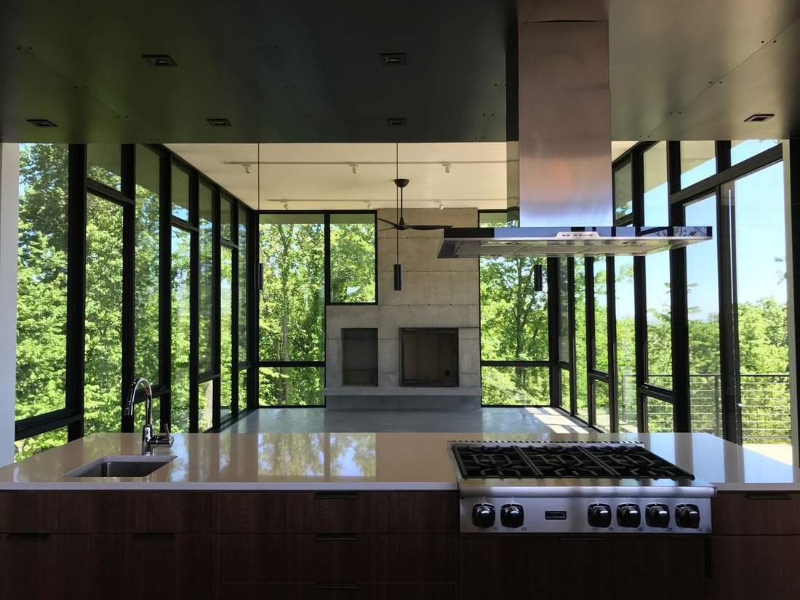

A Tom Kundig house in the Virginia hills.
Set on vineyard land in the rolling country west of Washington, Blue Ridge House is a design by Tom Kundig of Olson Kundig — known worldwide for raw, tactile materiality and a deep connection to the landscape. Built by PureForm Builders — led by Steve Howard, founder of Square One Development Group.
Much of the home’s character was fabricated by hand by our team — the board-formed concrete, the steel-and-glass structure, the firebox door and mantle, and the pivoting entry door. The kind of craft that doesn’t show up in a spec, only in the finished house.
The home was featured in Dwell and The Local Project, which credited the build to PureForm Builders alongside Olson Kundig.
Before the corten and glass, there was the structure — a steel frame and board-formed concrete core anchored to the hillside, with wings cantilevered out over the valley. This is the engineering that makes a house like this possible, and the part of the work we're proudest of.










